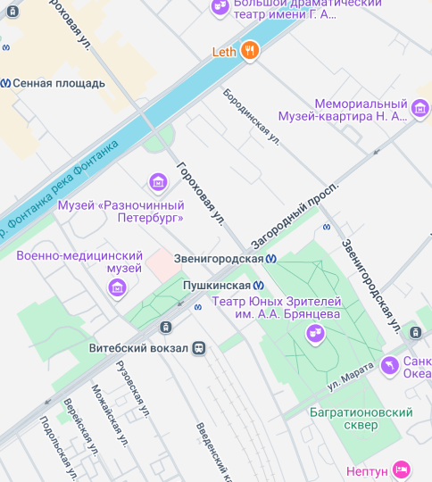

Основатель зоосалона — Гороленко Мария

Мария Гороленко
Основательница сети салонов "Уютный Стайл". Эксперт в груминге с более чем 25-летним опытом. Начав свой путь в 1997 году с выставочного груминга русских борзых, Мария расширила свою деятельность на пет-груминг в 2009 году с появлением китайской хохлатой собаки в семье.
Путь к профессионализму
Сочетая работу на руководящих должностях с грумингом, Мария постепенно погрузилась в любимое дело, которое стало для неё настоящим призванием. В 2019 году она открыла собственный зоосалон, где не только улучшает внешний вид питомцев, но и проявляет заботу и внимание к каждому клиенту.
Достижения и награды
Мария неоднократно доказывала своё мастерство на соревнованиях по грумингу, завоевывая призовые места:
- Всероссийский конкурс Волгагрум (2020): 2 место, категория «Модель дог»;
- Кубок Невы (2021): 2 место, категория «Йорки»;
- Компаньон.CUP (2021): 1 место, категория «Пудели»;
- IV Международный форум ПитерГрум (2021): 1 место, категория «Креативный Груминг»;
- Grooming Fest (2022): 3 место, категория «Пудели»;
- Компаньон.CUP (2024): подготовила призера, категория «Пудели».
Местоположение зоосалонов

Улица Академика Павлова, дом 7В
+7-924-783-03-21

Улица Петергофское шоссе, дом 51В
+7-996-743-64-27
Улица Средний проспект В.О., дом 83В
+7-984-234-11-00
Улица Савушкина, дом 141
+7-903-846-39-31
Улица Охтинская Перспектива, дом 1А
+7-988-852-97-31
Улица Миргородская, дом 1Б
+7-998-087-32-23

История основания
Сегодня мы сеть груминг-салонов в разных городах России, но с чего всё начиналось?
История "Уютный стайл" началась в 2019 году с открытия интернет-магазина по продаже премиальных зарубежных товаров для питомцев.Мы быстро набрали первых 10 000 подписчиков в инстаграмм, создали свой сайт и активно развивались. Нo в это начался активный рост маркетплейсов, с которыми мы не могли конкурировать ни по трафику, ни по логистике, ни по стоимости товаров. А также наложились ковидные ограничения с поставками товаров из-за рубежа.
Мы поняли, что нужны кардинальные изменения, которые диктует нам рынок
У нас уже была большая база клиентов с питомцами, которые уже любили бренд и являлись постоянными покупателями. Мы единогласно решили - открываем наш первый зоосалон. С этого момента началась долгая подготовка: очное обучение коллег, прохождение оффлайн-обучений, чтение десятков статей и изучение опыта зарубежных студий. Мы сразу определили для себя вектор развития - открытие
максимально гуманных, открытых груминг-салонов с дружелюбным сервисом и высоким уровнем качества.
Для первого салона выбрали отдельный павильон
Мы также столкнулись с многочисленными возражениями от коллег из сферы груминга. Нам говорили, что мы не сможем работать полностью открыто, что мы не сможем найти мастеров, кто согласился бы на такие условия работы.После двух месяцев интенсивной работы и строительства, мы наконец-то открыли наш первый салон. Он отличался от традиционных салонов груминга наличием огромных панорамных окон, которые позволяли клиентам наблюдать за процессом ухода за их питомцами. Это создавало атмосферу открытости и доверия, что, как мы надеялись, привлечет внимание и вызовет интерес у наших клиентов.
Ставка сработала! Первый салон открыт в СПБ
Мы ежедневно получали десятки отметок от людей, которые даже не были нашими клиентами.Благодаря необычной идеи и нашим горящим глазам, нам удалось найти одних из лучших грумеров города, которые стали частью нашей команды!В наш первый салон в Санкт-Петербурге стали ездить клиенты из разных частей города и мы поняли, что нам нужно масштабироваться и расширяться. Таким образом, несмотря на все трудности и сомнения, мы смогли воплотить нашу идею в жизнь и предложить рынку что-то новое и инновационное.
Сейчас мы сеть груминг и SPA салонов в городах России
Мы сохранили свою концепцию, с каждым годом стараемся улучшать сервис, качество услуг. Находимся в постоянном обучении наших мастеров, улучшаем составы комплексов, придумываем и внедряем уникальные для рынка услуги! Мы позиционируем себя как полноценное SPA для ваших питомцев: в каждом салоне есть специализированная косметика, джакузи и услуги, которые позволяют вывести качество груминга на новый уровень. Мы стремимся создать атмосферу заботы и внимания, каждый питомец получит индивидуальный подход и наилучший уход.
С 2024 года мы проводим множество мероприятий
За этот год мы провели огромное количество мероприятий: от первого Dog Camp и заплыва на сапах, до Арт-пикника и мастер-класса по лепке мисок с отпечатком лапы питомца. В своем telegram мы регулярно делимся полезными статьями, которые помогают владельцам животных лучше заботиться о своих питомцах. Мы проводим различные конкурсы, которые позволяют участникам выиграть призы. Мы организуем встречи, где члены нашего сообщества могут пообщаться, поделиться опытом и просто провести время в приятной компании. Телеграмм-канал: @Gruming_CozyStein